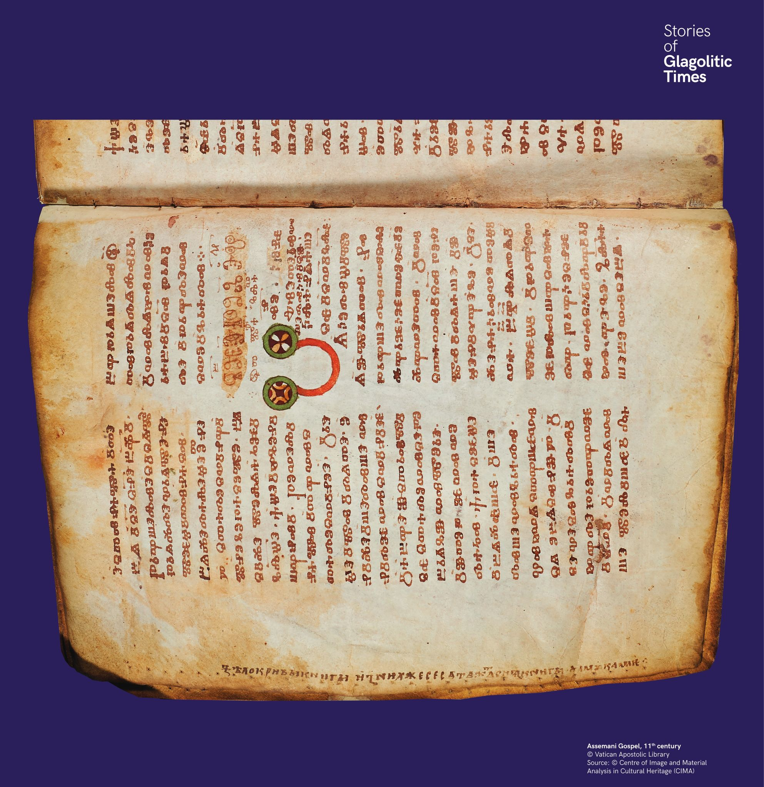

Egy írnok panasza
Az Assemani-evangélium margóján egy korai szláv írástudó megjegyzése olvasható: „Ezek a pergamenek olyan durvák, hogy fáj!”. A glagolita kézirat másolója cirill írással hagyta üzenetét.


Az Assemani-evangélium margóján egy korai szláv írástudó megjegyzése olvasható: „Ezek a pergamenek olyan durvák, hogy fáj!”. A glagolita kézirat másolója cirill írással hagyta üzenetét.
В полето на Асеманиевото евангелие е оставена бележка: „Тези пергаменти са толкова груби, че боли!“. Писарят използва кирилица, за да сподели страданието си.